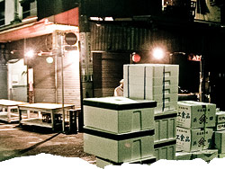

 image: e OrimO“ほぼ満員の客がざわざわと寿司を食らっている”
午前2時、私は24時間営業の寿司屋に行こうと築地に向かった。暗闇の中、自転車をこぐと、自販機の白い光が目につく。デニーズが先に見えたのを合図に、立ち漕ぎ体勢で、かちどき橋[1]を越える準備に入る。この橋の越えると、晴海通り[2]は築地、銀座へと続いて行く。橋の下り坂で一気に表側の世界へ突進して行くような感覚が、私は好きだ。
橋を越えたすぐ左手には築地市場[3]が広がっているが、まだ開場前でひっそりしている。買い物客とサラリーマンで賑わっているのが常の場外市場も人影がない。その暗い小道に入ると、その先にひとつだけ、看板が白く光っていているのが見えた。チェーン店らしいその店先に自転車を止める。自動ドアが開いて中に入ったとたん、その明るさで頭が朦朧となった。
「ヘイ、ヘイ！」と声を張る板前たちを囲む、ぐるりと弧を描くカウンターとテーブル席。天井からは白く光る大きなライトボールがいくつもぶら下がっている。その広い店内には、ほぼ満員の客がざわざわと寿司を食らっている。こんなところに、四次元寿司屋が存在しているなんて知らなかった。その勢いに圧倒されながらも、うっとりその光景に見入った。
視覚神経に集中して、味覚がおろそかになった。寿司の味は、覚えていない。いくらとうにとたまごの橙色、金色のラメのワンピ、髪と髭が異様にもじゃもじゃなのとか、やたらと大きい古いカバン、といったものを見た記憶が残っている。
午前4時すぎ、店を出ると薄明るくなった晴海通りに、卸トラックの列が出来ていた。朝になる前に、布団に入ろうと自転車をこいだ。
referenced works
- かちどき橋：勝鬨橋と表記。勝鬨とは、勝利者のあげる雄たけびのこと。この橋の名は、日露戦争に由来するという。二葉式跳開橋だが、昭和15年の完成後、30年間稼動しただけで、現在では電源も供給されておらず、開かずの橋となっている。 ↩
- 晴海通り：国道1号線の祝田橋交差点（千代田区）から、日比谷交差点を経て、東京都道304号日比谷豊洲埠頭東雲線の東雲交差点（台東区）へ至る道路。江東区が2006年に行った道路交通騒音・振動調査によれば、10分あたりの交通量は546台とのこと。圧倒的な交通量である。自転車で走り抜ける際には、くれぐれも安全運転を心がけたい。 ↩
- 築地市場：東京の台所、とも呼ばれる中央卸売市場。午後5時を過ぎると、各地からトラックによって魚などの荷が運び込まれ、卸売業者によって並べられる。午前5時になると、威勢のいい掛け声と共にセリが始まり、仲卸業者の手に魚や野菜が渡る。午前7時ごろに仲卸業者が市場内の店に商品を並べ始め、飲食店関係者や小売業者が仲卸業者のもとへ買い物に訪れる。午前11時ごろには、市場の一日が終わる。そして、市場から店先や料理屋へと魚や野菜が運ばれ、われわれの食卓に並ぶのである。 ↩
location information
- 場所: 中央区の築地場外市場
- 時間: 深夜
- 緯度: 35.66821
- 経度: 139.770298
- 地図: Google Maps
016 “ポツンと東京を見下ろすその姿は気高く、とても真摯だ。”
015 “光に彩られて先輩の横顔が、綺麗に染まる.。”
014 “悲しくて歩けないという気持ちを初めて知った夜”
013 “私たちの声だけが静かに揺れた”
012 “細くぐるりと指を囲む、日焼けをしていない左手の薬指の根元”
011 “涙を流しながら煙を吐く彼の隣”
010 “幼い耳には雑音にしか聴こえない音楽に興味が湧いた”
009 “今年も蕎麦が食べられるなぁ”
008 “お堀に映った月をみんなで見てる”
007 “バッグの中だけがつめたいまま”
006 “ほぼ満員の客がざわざわと寿司を食らっている”
005 “向かい合って、仁王立ち”
004 “なんでもないたった6畳の白い部屋”
003 “昔の彼女がスーツを着てモデルをしてた”
002 “電車が悪いんです”
001 “どこで彼女とセックスをするのかは、東京の子供にとっては問題です”

Write for Us!
広い東京の中に、あなたの思い出を刻んでみませんか？ あの日、あの場所で体験した、あの出来事。あなたにとって忘れられない思い出を、短い物語にして送ってください。
commentary